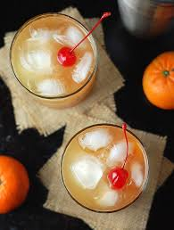
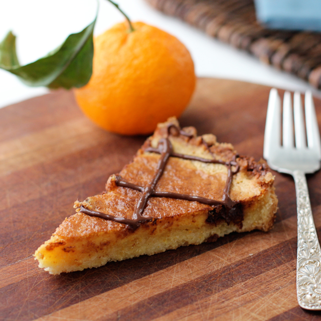
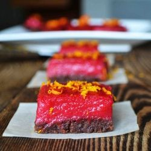

Healthy Recipes
We have 3 options for you to choose.
Our healthy recipes are for you, so if you want to live a good life and eat lunchs that are good for your body, just read this article of our webpage. We have 3 tipes of recipes in every article and we also added an exercise for you to pracise.
Whitout more hesitation, let's start with recipe number one.
Honey Tangerine Whiskey Sour
For adults who want to try an amazing beverage. This just might be the perfect fall cocktail. Soothing honey; smokey whiskey; and fresh, tart tangerine juice. Best of all, you can make a big batch a few hours in advance!

Ingredients
- 1/3 cup honey
- 1/3 cup water
- 3/4 cup freshly squeezed tangerine juice 2-3 tangerines
- 1/4 cup freshly squeezed lemon juice 1 large lemon
- 1 cup whiskey
- Ice
- 4 strips of tangerine zest
- 4 cherries maraschino or morello
- Club soda optional
Instrucctions
- Combine the honey and water in a small saucepan over medium heat, and simmer until the honey dissolves. Cool. Transfer the honey mixture to a pitcher and add the tangerine juice, lemon juice, and whiskey. Stir to combine.
- Fill four rocks glasses with ice. Divide cocktails among the glasses and garnish with a strip of tangerine zest and a cherry. Top with club soda, if desired.

Tangerine-Almond Tart With Chocolate Drizzle
A good dessert to make in home.
Ingredients
- 1 1/4 cups all-purpose flour
- 1/3 cup sugar
- 1 tsp grated tangerine or orange zest
- 1/4 tsp salt
- 8 tbs unsalted butter, cold, cut into cubes
- 1 large egg yolk
Ingredients
- 1/2 cup slivered almonds
- 1/3 cup sugar
- 2 eggs
- 1 egg white
- 1/2 cup tangerine juice (about 3 tangerines) or orange juice
- zest of 3 tangerines (about 3 tsp)
- 3 oz semisweet chocolate chips
Instrucctions
- Preheat oven to 400. Butter the bottom of a 9.5-in two piece tart pan. In a food processor, process the flour 1/3 cup sugar, zest, and salt for a few seconds to combine. Add the butter, and process until the mixture resembles coarse crumbs. Add the egg yolk (don't forget to save the white for the filling) and process just until it comes together in a ball. Pat the dough into the tart pan, prick the bottom all over with a fork, and then bake for 18-20 minutes. Set aside
- Turn oven down to 375. Clean out your food processor. Place almonds on a cookie sheet and toast in the oven for 3 to 5 minutes, until golden and fragrant. Let cool for a few minutes.
- Place the almonds and 1/3 cup sugar into the food processor and process until almonds are ground. Add eggs, egg white, tangerine juice, and zest to the processor, and process until well blended. Scatter half of your chocolate chips over the crust. Pour the tangerine filling into the crust.
- Bake the tart at 375 for about 25-30 minutes. The filling should be set. Melt your remaining chocolate chips in a double boiler (I used a small metal bowl placed over a pot of boiling water -- the bowl should be above and not touching the water), or you can use a microwave if you have one of those newfangled gadgets. Drizzle the chocolate decoratively over the tart.
Cranberry Tangerine Bars With Chocolate Shortbread Crust
A yummy recipe to make at home when you are bored.

Ingredients
- 1/2 cup slivered almonds
- 3 cups chocolate morsels, (about 1 1/2 (12-ounce) bags)
- 1/2 cup dried cranberries
- 1/2 tangerine, zested
Instrucctions
- Preheat oven to 400 degrees F.
- Line a 13 by 9-inch baking pan with aluminum foil.
- Lay out almond slivers on baking sheet. Bake in oven until light brown, shaking the baking pan occasionally to mix them around, about 10 to 15 minutes.
- Melt the chocolate morsels in a double boiler over low heat. Mix in the cranberries, almond slivers and tangerine zest.
- Pour into prepared pan. Smooth the chocolate mixture out into an even layer. Cool to room temperature and then refrigerate until hard, at least 1 hour.
- Use a knife to break up chocolate into jagged, varied sized bars
Planks
Planks are an effective way to target both your abdominal muscles and your whole body. Planking stabilizes your core without straining your back the way situps or crunches might.
How to do Planks?
- Begin in a pushup position with your hand and toes firmly planted on the ground, your back straight, and your core tight.
- Keep your chin slightly tucked and your gaze just in front of your hands.
- Take deep controlled breaths while maintaining tension throughout your entire body, so your abs, shoulders, triceps, glutes and quads are all engaged.
- Complete 2-3 sets of 30 second holds to start.